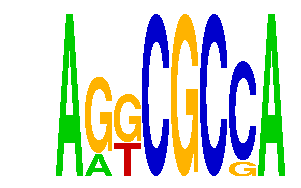

family_15 |
|---|
|  |
| Download PWM |
| Download instances (motifs) |
| Show motif distribution |
Query_ID | Query_Consensus | Subject_Name | Source_DB | Subject_ID | Length | Orientation | Offset | Divergence | Overlap | Subject_Consensus |
|---|---|---|---|---|---|---|---|---|---|---|
| family_15 | AGGCGCCA | TAANNYSGCG | JASPAR | PF0162 | 10 | reverse-complement | 3 | 0.397 | 5 | TAANATGGCG |
| family_15 | AGGCGCCA | GCCATNTTG | JASPAR | PF0010 | 9 | as given | 4 | 0.454 | 4 | GCCATYTTG |
| family_15 | AGGCGCCA | GATTGGY | JASPAR | PF0005 | 7 | reverse-complement | 4 | 0.849 | 4 | GATTGGC |
Sequence | Start_position (from start) | Start_position (from end) | Average conservation | Best conservation score | Instance_with_best_CS | Best_Z-score | Instance_with_best_ZS | Strand |
|---|---|---|---|---|---|---|---|---|
| chr9:120528540-120529540 | 404 | 412 | 0.95525 | 0.998 | AGKCGCSA | 12.211386 | ARKCGCCA | 1 |
| chr4:55294133-55295133 | 533 | 541 | NA | NA | AGKCGCSA | 13.908785 | AGKCGCSA | 1 |
| chr2:77009423-77010423 | 670 | 678 | 0.003625 | 0.008 | AGKCGCSA | 12.211386 | ARKCGCCA | 1 |
| chr13:29704778-29705778 | 736 | 744 | 0.000625 | 0.004 | ARKCGCCA | 12.211386 | ARKCGCCA | 1 |
| chr14:63986546-63987546 | 329 | 337 | 0.001375 | 0.01 | ARKCGCCA | 13.908785 | AGKCGCSA | 1 |
| chr3:95764567-95765567 | 980 | 988 | 0.00075 | 0.002 | AGKCGCSA | 12.211386 | ARKCGCCA | -1 |
| chr7:143199581-143200581 | 38 | 46 | 0.899625 | 1 | ARKCGCCA | 12.211386 | ARKCGCCA | -1 |
| chr12:74947485-74948485 | 887 | 895 | 0.30875 | 0.757 | AGKCGCSA | 12.211386 | ARKCGCCA | 1 |
| chr7:149796346-149797346 | 280 | 288 | 0.267125 | 0.38 | ARKCGCCA | 13.908785 | AGKCGCSA | 1 |
| chr15:76843572-76844572 | 493 | 501 | 0.00025 | 0.001 | ARKCGCCA | 13.908785 | AGKCGCSA | 1 |
| chr3:65298257-65299257 | 448 | 456 | 0.56325 | 0.997 | AGKCGCSA | 12.211386 | ARKCGCCA | 1 |
| chr8:24498059-24499059 | 238 | 246 | 0.002 | 0.004 | ARKCGCCA | 12.211386 | ARKCGCCA | 1 |
| chr7:3264462-3265462 | 831 | 839 | 0.487875 | 0.918 | AGKCGCSA | 13.908785 | AGKCGCSA | 1 |
| chr4:129590772-129591772 | 420 | 428 | NA | NA | ARKCGCCA | 12.211386 | ARKCGCCA | 1 |
| chr8:13253380-13254380 | 457 | 465 | 0.98425 | 1 | ARKCGCCA | 13.908785 | AGKCGCSA | 1 |
| chr16:91885558-91886558 | 54 | 62 | 0.000375 | 0.002 | ARKCGCCA | 13.908785 | AGKCGCSA | 1 |
| chr5:122509178-122510178 | 532 | 540 | 0.003 | 0.008 | AGKCGCSA | 12.211386 | ARKCGCCA | -1 |
| chr4:57652793-57653793 | 375 | 383 | 0.00175 | 0.004 | ARKCGCCA | 13.908785 | AGKCGCSA | 1 |
| chr11:90113286-90114286 | 527 | 535 | 0.007 | 0.019 | ARKCGCCA | 12.211386 | ARKCGCCA | 1 |